Robin Ye:
"At this moment, just like in 2000, software development into the Internet age, programmers either continue learning or be weeded out. Now the Internet age is over, welcome to the age of AI and blockchain."
What we are going to talk about?
- Evolution of Currency
- What is Bitcoin
- History of Bitcoin
- Transactions
- Blockchain
- Mining and Consensus
- User Security Best Practices
- Blockchain Applications
What we are not going to talk about?
- Alternative Coins
- Ethereum
- Elliptic Curves Cryptography
- Digital Signatures (ECDSA)
What is Bitcoin?
Bitcoin consists of:
- A decentralized P2P network (the bitcoin protocol)
- A public transaction ledger (the blockchain)
- A set of rules for independent transaction validation and currency issuance (consensus rules)
- A mechanism for reaching global decentralized consensus on the valid blockchain (Proof-of-Work algorithm)
History of Bitcoin
- The bitcoin network started in 2009, based on a reference implementation published by Nakamoto and since revised by many other programmers
History of Bitcoin
- Satoshi Nakamoto withdrew from the public in April 2011, leaving the responsibility of developing the code and network to a thriving group of volunteers
Bitcoin Price 2013 - 2018
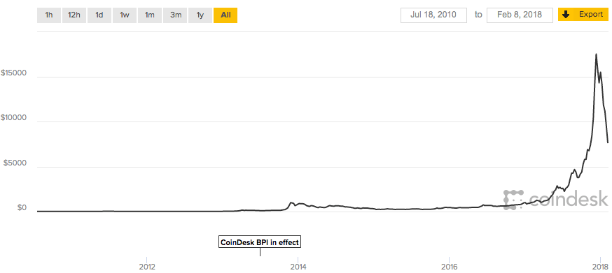
Keys, Addresses, and Wallets
- Ownership of bitcoin is established through digital keys, bitcoin addresses, and digital signatures
- The digital keys created and stored by users in a file, or simple database, called a wallet
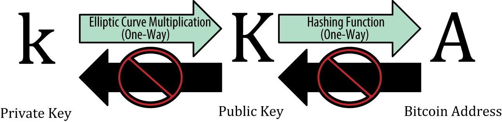
Transaction Inputs and Outputs
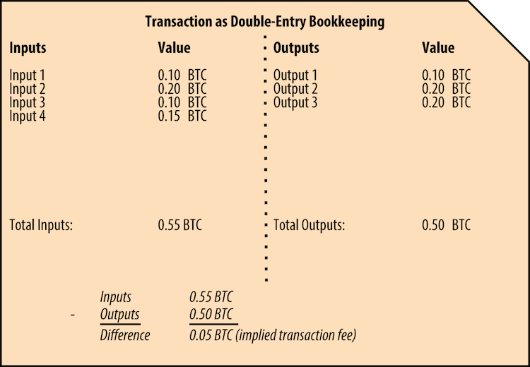
A chain of transactions
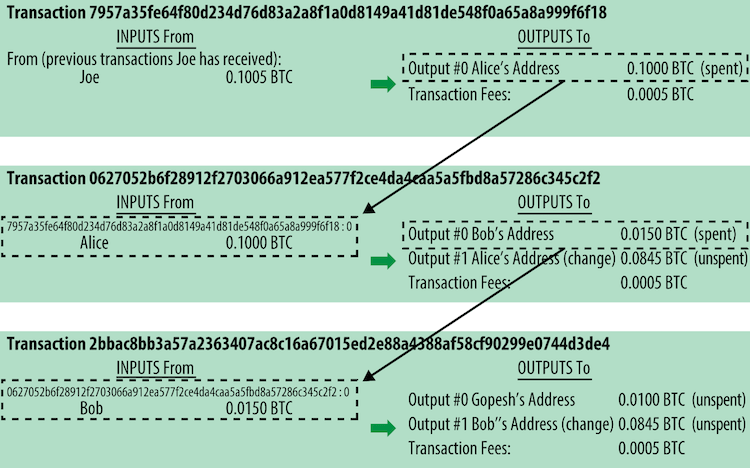
Common Transaction Forms
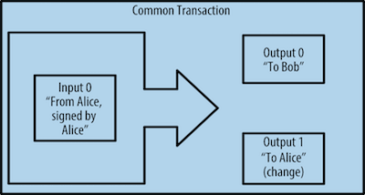
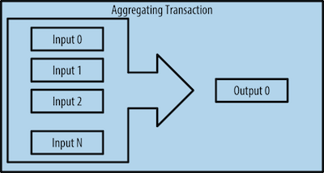
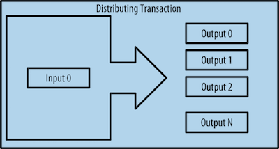
UTXO
- UTXO means "Unspent Transaction Outputs"
- UTXO can be spent as an Input in a transaction
- Every transaction represents a change in the UTXO set
- Bitcoin "balance" is the sum of all UTXO that user’s wallet can spend and which may be scattered among hundreds of transactions and hundreds of blocks
Transaction Fees
Fees = Sum(Inputs) – Sum(Outputs)
- Calculated based on the size of the transaction in Kbytes, not the value of the transaction in bitcoin
- Transaction fees affect the processing priority
- Most wallets calculate and include transaction fees automatically
Transaction Scripts
- Bitcoin’s scripting language is a stack-based, turing completeness, and stateless verification language
- Bitcoin’s transaction validation relies on two types of scripts: a locking script and an unlocking script
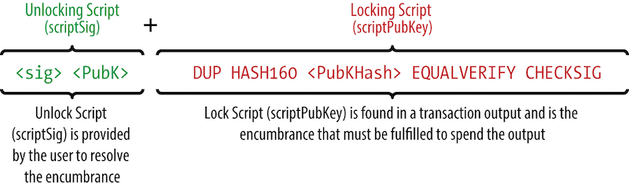
Evaluating a script for a P2PKH transaction
The vast majority of transactions processed on the bitcoin network spend outputs locked with a Pay-to-Public-Key-Hash or "P2PKH" script
Block and Blockchain
- Block is a container data structure that aggregates transactions
- The blockchain data structure is an ordered, back-linked list of blocks, serves as the public ledger for all transactions
Structure of a Block
| Size |
Field |
Description |
| 4 bytes |
Block Size |
The size of the block, in bytes, following this field |
| 80 bytes |
Block Header |
Several fields form the block header |
| VarInt |
Transaction Counter |
How many transactions follow |
| Variable |
Transactions |
The transactions recorded in this block |
Block Header
| Size |
Field |
Description |
| 4 bytes |
Version |
A version number to track software/protocol upgrades |
| 32 bytes |
Previous Block Hash |
A reference to the hash of the previous block in the chain |
| 32 bytes |
Merkle Root |
A hash of the root of the merkle tree of this block’s transactions |
| 4 bytes |
Timestamp |
The approximate creation time of this block |
| 4 bytes |
Difficulty |
The Proof-of-Work algorithm difficulty target for this block |
| 4 bytes |
Nonce |
A counter used for the Proof-of-Work algorithm |
The Genesis Block
The first block in the blockchain is called the genesis block and was created in 2009. The genesis block contains a hidden message within it. The coinbase transaction input contains the text "The Times 03/Jan/2009 Chancellor on brink of second bailout for banks," by referencing the headline of the British newspaper The Times.
Merkle Tree
Even number of nodes
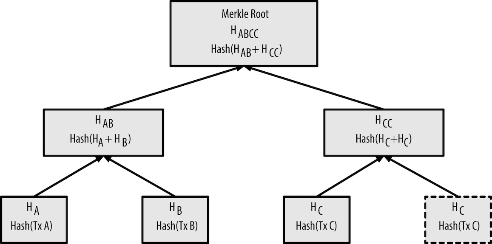
Merkle Tree Efficiency
| Number of Txs |
Approx. size of block |
Path size (hashes) |
Path size (bytes) |
| 16 txs |
4 KB |
4 hashes |
128 bytes |
| 512 txs |
128 KB |
9 hashes |
288 bytes |
| 2048 txs |
512 KB |
11 hashes |
352 bytes |
| 65535 txs |
16 MB |
16 hashes |
512 bytes |
Miner
- Miners validate new transactions and record them on the global ledger
- Miners receive two types of rewards by mining: new coins created with each new block, and transaction fees from all the transactions included in the block
Bitcoin Economics and Currency Creation
Each block, generated on average every 10 minutes, contains entirely new bitcoin, created from nothing
Bitcoin Money Supply
- Every 210,000 blocks, or approximately every 4 years, the currency issuance rate is decreased by 50%
- Finally, in approximately 2140, almost 21 million bitcoin will be issued. Thereafter, blocks will contain no new bitcoin, and miners will be rewarded solely through the transaction fees
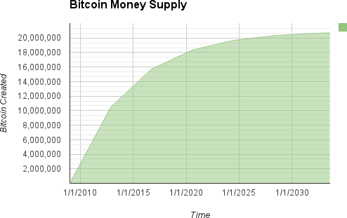
The Coinbase Transaction
- The first transaction in any block is a special transaction, called a coinbase transaction
- Coinbase transaction does not consume UTXO as inputs. Instead, it has only one input, called the "coinbase", which creates bitcoin from nothing
Proof of Work
The Difficulty target and Nonce in block header
| Size |
Field |
Description |
| 4 bytes |
Difficulty |
The Proof-of-Work algorithm difficulty target for this block |
| 4 bytes |
Nonce |
A counter used for the Proof-of-Work algorithm |
Proof of Work
The Proof-of-Work must produce a hash (Nonce) that is less than the difficulty target
# example of proof-of-work algorithm
max_nonce = 2 ** 32 # 4 billion
def proof_of_work(header, difficulty_bits):
difficulty_target = 2 ** (256-difficulty_bits)
for nonce in xrange(max_nonce):
block_hash = hashlib.sha256(str(header)+str(nonce)).hexdigest()
if long(block_hash, 16) < difficulty_target:
print "Success with nonce %d" % nonce
return (block_hash, nonce)
Retargeting to Adjust Difficulty
- Blocks are generated every 10 minutes, on average. This is bitcoin’s heartbeat and underpins the frequency of currency issuance and the speed of transaction settlement
- Retargeting occurs automatically and on every node independently
New Difficulty = Old Difficulty *
(Actual Time of Last 2016 Blocks / 20160 minutes)
Miner Competition
When one miner solves and transmits a block, other miners receive, validate, and then propagate the new block, they abandon their efforts to find a block at the same height and immediately start computing the next block in the chain
Decentralized Consensus
Bitcoin’s decentralized consensus emerges from the interplay of four processes that occur independently on nodes across the network:
- Independent verification of each transaction, by every full node, based on a comprehensive list of criteria
- Independent aggregation of those transactions into new blocks by mining nodes, coupled with demonstrated computation through a Proof-of-Work algorithm
- Independent verification of the new blocks by every node and assembly into a chain
- Independent selection, by every node, of the chain with the most cumulative computation demonstrated through Proof-of-Work
Blockchain Forks
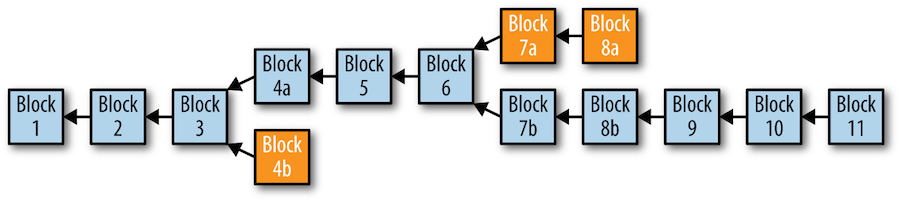
- Because the blockchain is a decentralized data structure, different copies of it are not always consistent
- As long as all nodes select the greatest-cumulative-work chain, the global bitcoin network eventually converges to a consistent state
Hard Fork
A permanent divergence in the blockchain, commonly occurs when non-upgraded nodes can’t validate blocks created by upgraded nodes that follow newer consensus rules
51% Consensus Attacks
If we controlled a majority (51%) of the total network’s hashing power, we can:
- Cause deliberate "forks" in the blockchain and double-spend transactions
- Execute DoS attacks against specific transactions or addresses
Is It Too Late to Start Mining?
GPU Miner
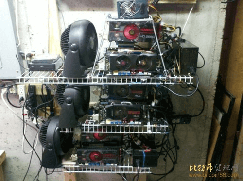
Nvidia GTX1080 GPU = 2.83GH/s for 200w
ASIC: Application-Specific Integrated Circuit
AntMiner S2 ASIC = 1000GH/s for 120w
Return On Investment
ROI = Miner costs / (Income per day - Power costs)
In this highly competitive environment, miners collaborate to form mining pools
User Security Best Practices
- Physical Bitcoin Storage
- Hardware Wallets
- Balancing Risk
- Diversifying Risk
- Multisig and Governance
- Survivability
Blockchain Applications
- Digital Identity
- Proof-of-Existence (Digital Notary)
- Kickstarter
- Smart Contracts
- Distributed Cloud Storage